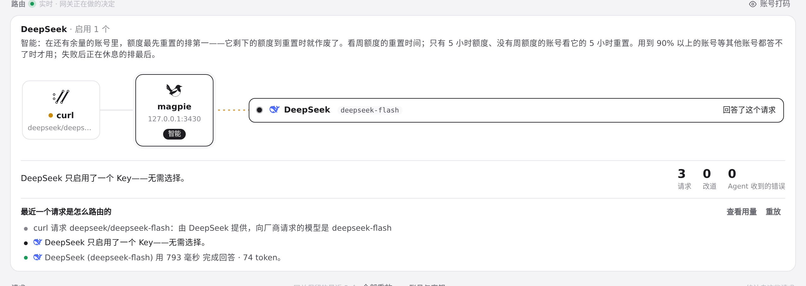
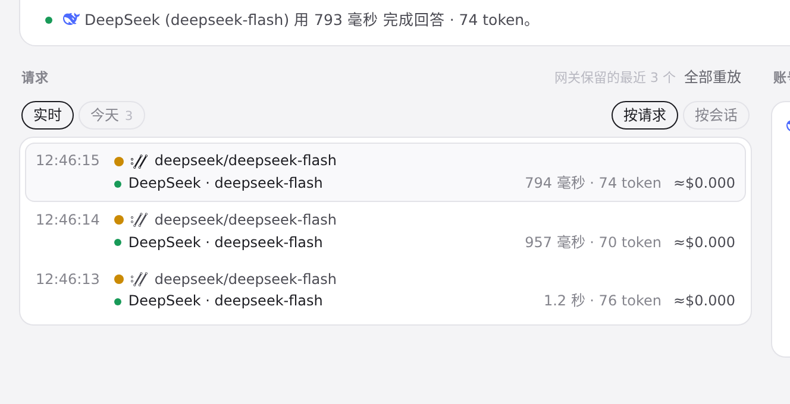
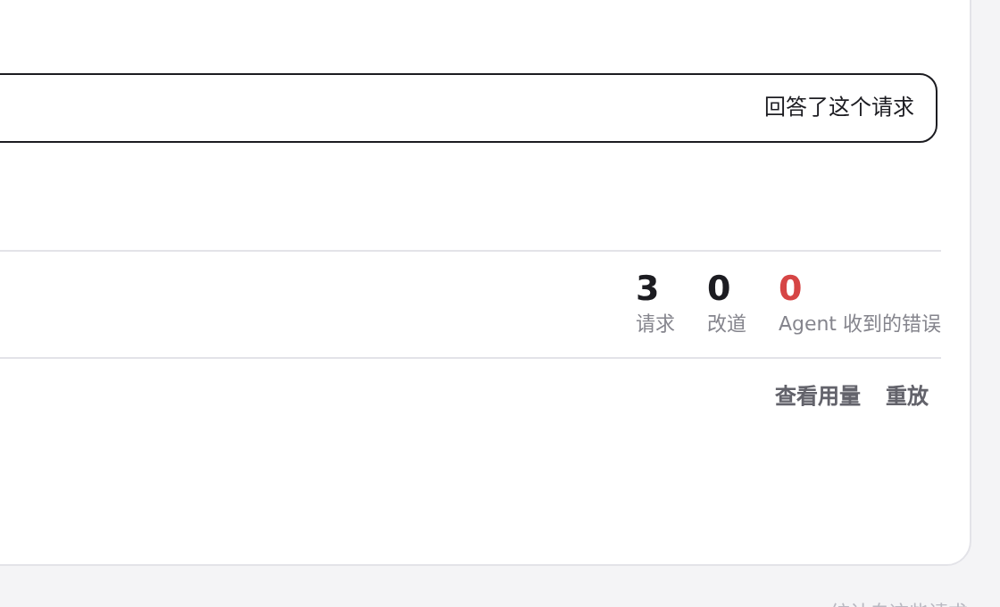
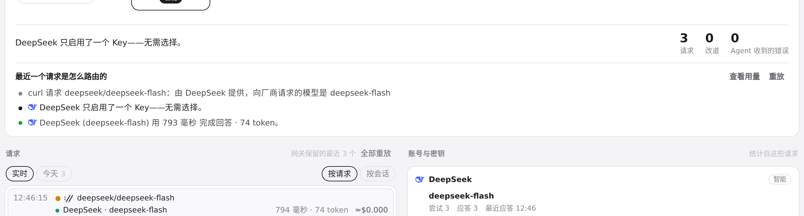
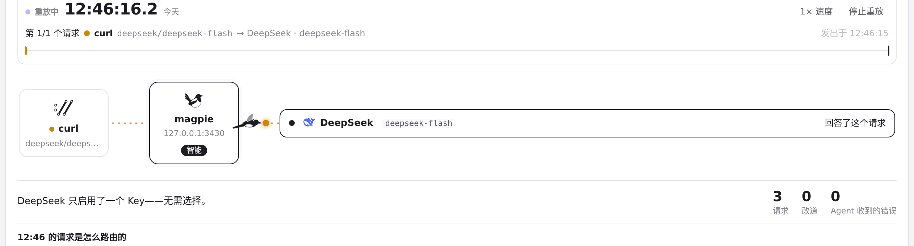
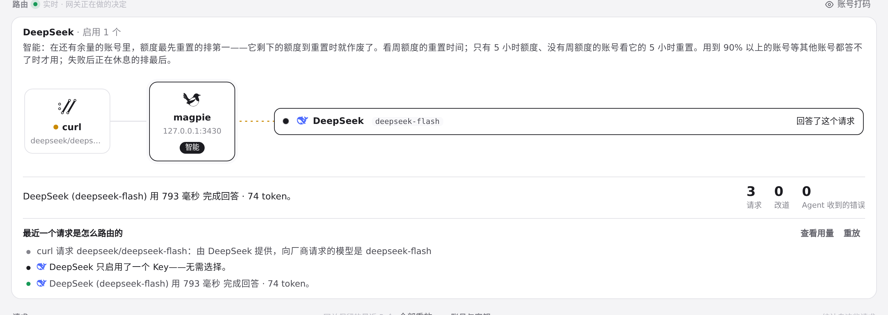

#772 界面预览
commit 12ea5b4 · 回到 PR · routing.js 把「一条请求算不算失败」从只看状态码改成看整条请求：状态 200 但已开始回答随后中断（try 带 fail）的请求现在按失败处理——路由页的行不再显示成绿色应答、替换/改道标记只在 tryOk 的 try 上出现、错误统计的点击能挑中它、请求日志和两处重放动画（页面与 Agents 面板）也按同一条规则走。
红线是鼠标走过的轨迹，红色圆环是一次点击；底部文字是这一步在做什么。空格暂停，← → 逐段查看。

路由页：请求列表与错误统计 · 路由页：最近一个请求的日志与统计

路由页：请求列表与错误统计 · 网关保留的最近几个请求

路由页：请求列表与错误统计 · 点击统计之后的统计栏与列表

路由页：请求列表与错误统计 · 该请求的日志

重放动画 · 重放动画中的请求流向

重放动画 · 重放结束后同一条请求的日志与统计